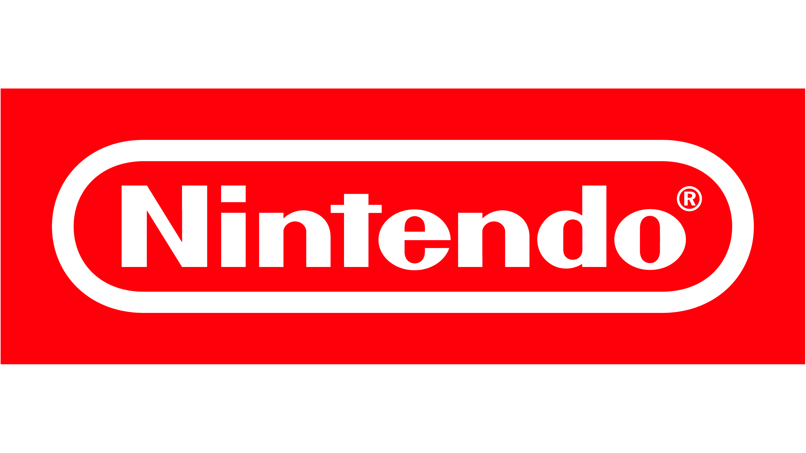

Japan has played a crucial role in the digital age, introducing numerous technologies and innovations. Their achievements reflect Japan's commitment to innovation and technological advancement, shaping modern life and industry

Gunpei Yokoi (Japanese toy maker and video game designer) was the creator of the Game Boy and Virtual Boy and worked on Famicom (and NES), the Metroid series, Game Boy Pocket and did extensive work on the system we know today as the Nintendo Entertainment System (called the FamiCom in Japan).
The Sony Group encompasses various businesses, including electronics (Sony Corporation), imaging and sensing (Sony Semiconductor Solutions), film (Sony Pictures Entertainment), music (Sony Music Group and Sony Music Entertainment Japan), video games (Sony Interactive Entertainment), and others.

The first Sony PlayStation was invented by Ken Kutaragi. Research and development for the PlayStation began in 1990, headed by Kutaragi, a Japanese Sony engineer.
Japan has (text praising japan in the arts)